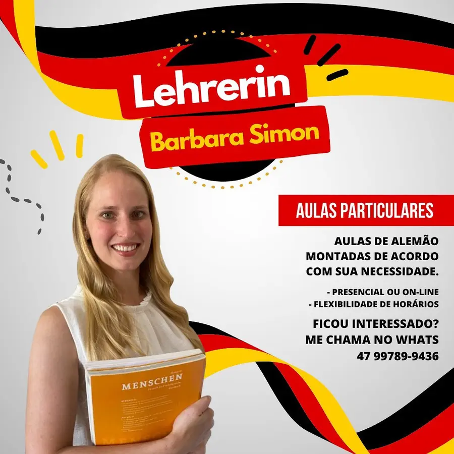
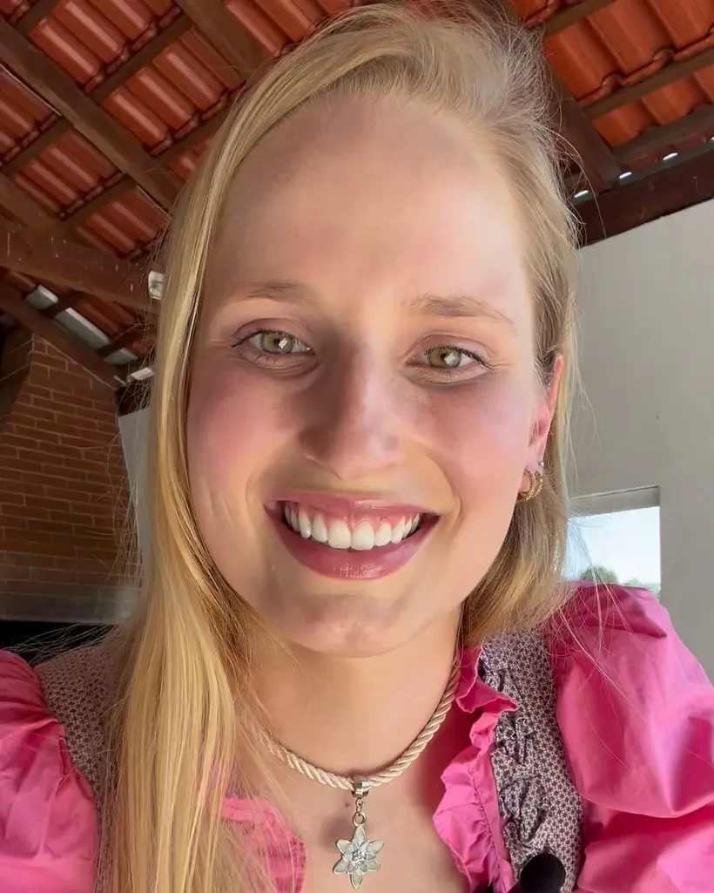
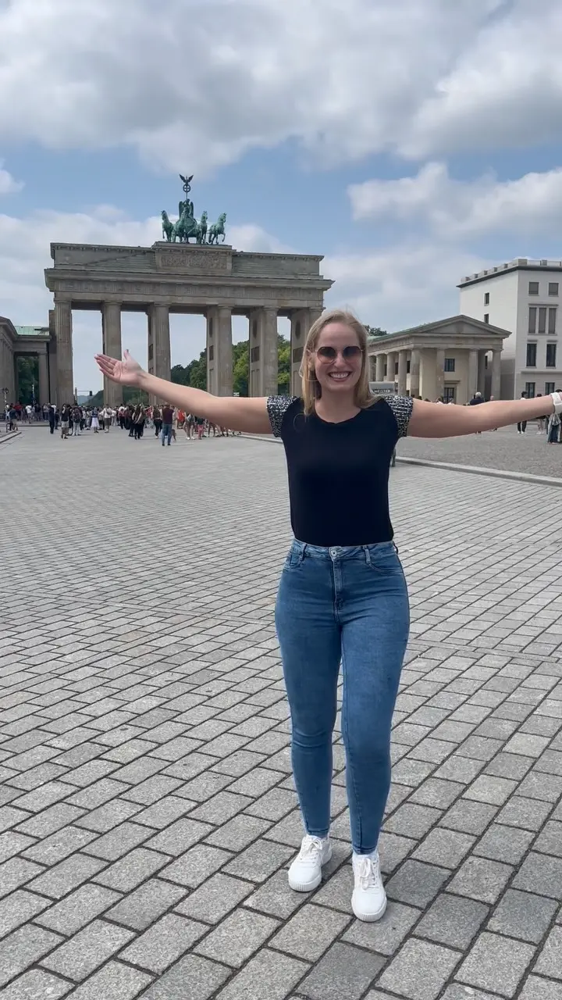
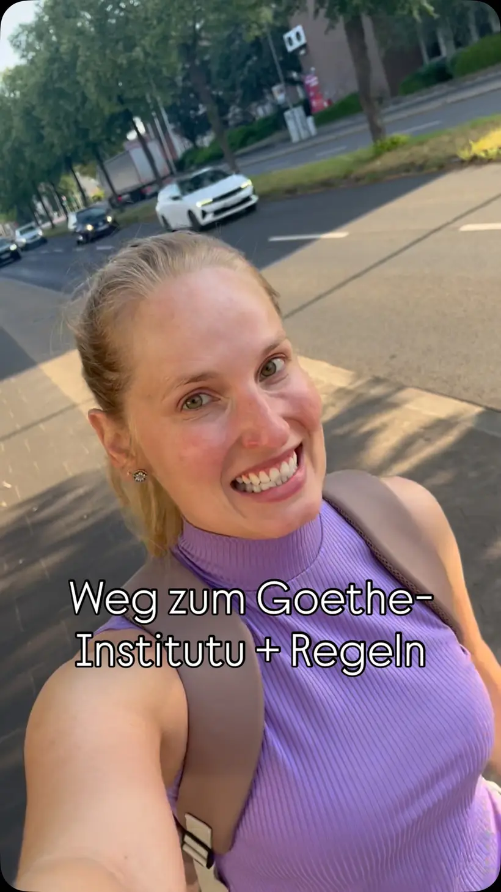
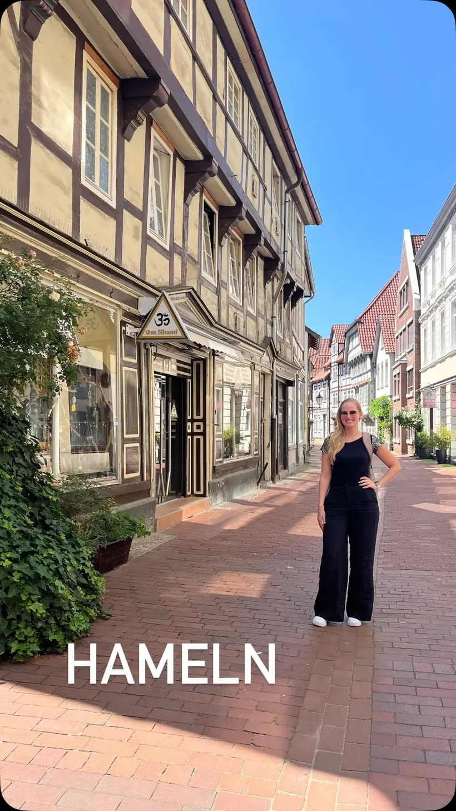
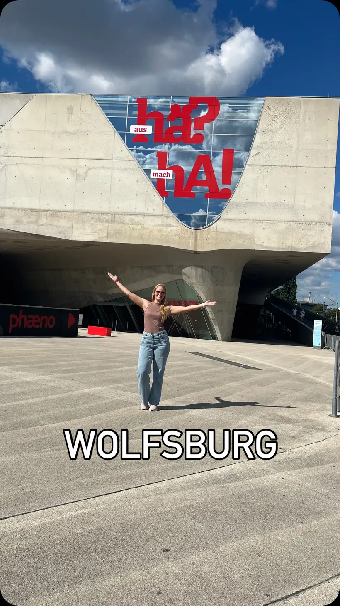
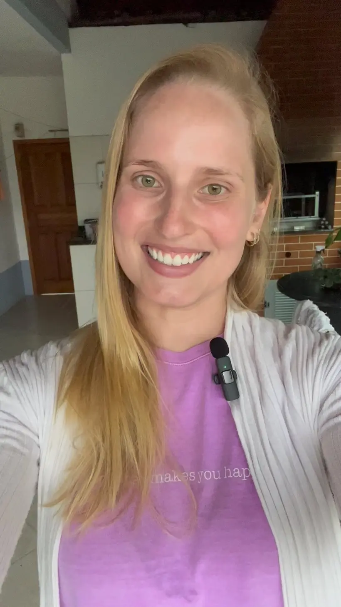

Alemão
1:1
- Aulas montadas de acordo com a sua necessidade
- Presencial ou on-line
- Flexibilidade de horários
- Atenção individual, no seu ritmo

Profª Barbara Simon · Deutschlehrerin 🇩🇪
PT Aprenda alemão comigo.
Aulas particulares de alemão montadas de acordo com a sua necessidade — presencial ou on-line, com flexibilidade de horários.

01 Das bin ich
Sou a Barbara, professora de alemão — Deutschlehrerin. Dou aulas particulares e compartilho o idioma todos os dias no Instagram, sempre em alemão e português.
Minha relação com a língua vai além da sala de aula: vivo a cultura alemã de perto — da Oktoberfest de Blumenau às ruas de Göttingen, Berlim, Hameln e Wolfsburg, com direito a dia a dia no Goethe-Institut.
Tudo isso vira conteúdo de aula: palavras que você usa de verdade, situações reais e a cultura por trás do idioma.




02 Die Methode
Nada de pacote engessado. Cada aula parte de quem você é, do que você precisa e do tempo que você tem.
As aulas são montadas de acordo com a sua necessidade — o conteúdo acompanha o seu objetivo com o alemão.
Presencial ou on-line, com flexibilidade de horários para caber na sua rotina.
Do Pfand das garrafas às regras do transporte público: o idioma aparece em situações reais, como nos vídeos do perfil.
Perguntar, tentar e errar fazem parte do caminho. Ninguém aprende alemão com medo de abrir a boca.
„Danke fürs Lernen, fürs Fragen, fürs Ausprobieren und auch dafür, dass ihr manchmal Fehler macht.“
“Obrigada por aprenderem, por perguntarem, por tentarem e também por cometerem erros às vezes.”
— Barbara, para os alunos 💙
03 Das Angebot

A professora também atende reforço. Conte o que você (ou seu filho) precisa e receba as opções disponíveis.
Perguntar sobre reforço →Vocabulário, cultura e o dia a dia na Alemanha em vídeos curtos, em alemão e português.
Seguir no Instagram →04 Warum ich?
subst. vivência.
Alemão aprendido e vivido na Alemanha — Göttingen, Berlim, Hameln, Wolfsburg — e trazido para a sua aula.
adj. bilíngue.
Explicações que conectam o alemão ao português, sem deixar você perdido no caminho.
subst. cultura.
Da Oktoberfest de Blumenau ao Brezel na padaria alemã: o idioma vem junto com o jeito de viver.
loc. com amor.
Uma professora que celebra cada pergunta e cada tentativa. Paciência e leveza do primeiro “Hallo” em diante.
05 Was sie sagen
Comentários reais deixados nas publicações do perfil.
Die beste Deutschlehrerin der Welt 👏🏻🇩🇪Meine Liebe! 💖🫶🏼 Linda, profe!
Vou começar! 🙌
Ihr Deutsch ist sehr gut.06 Fragen?

Os dois formatos estão disponíveis. Você escolhe o que funciona melhor para a sua rotina.
Há flexibilidade de horários. Chame no WhatsApp para ver os horários disponíveis e combinar o melhor para você.
Não. As aulas são montadas de acordo com a sua necessidade — o objetivo com o alemão é o ponto de partida.
Pode. Errar e perguntar fazem parte do processo. Conte em que ponto você está e a aula começa a partir daí.
Valores e condições são passados diretamente pelo WhatsApp, de acordo com o formato e a frequência que você escolher.
Sim, a professora também atende reforço. Envie uma mensagem contando o que você precisa para receber as opções.
07 Los geht’s!
Ficou interessado? Me chama no Whats e a gente monta a sua aula.
(47) 99789-9436